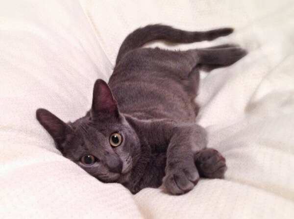

Conoce a nuestros michis!
Bienvenidos a la sección más encantadora de Miau Café, donde te presentamos a los protagonistas de nuestra historia, nuestros amados mininos.
En "Nuestros Michis", te invitamos a conocer a cada uno de nuestros gatos, descubriendo sus personalidades únicas, historias de vida y por qué se han convertido en parte esencial de la magia de Miau Café. Desde los gatos juguetones hasta los más relajados, te ofrecemos un vistazo exclusivo a las estrellas peludas que alegran nuestro espacio y que te esperan con cariño. Acompáñanos en este paseo por el mundo felino de Miau Café, donde cada gato tiene su propia historia que contar.
Hécate
Hecate es una gata tricolor muy cariñosa y juguetona que roba corazones en Miau Café. Con su actitud juguetona y su amor por la diversión, Hecate es la compañía perfecta para aquellos que buscan una interacción llena de alegría y vitalidad.Amy
Amy es una gata de pelo largo blanco con naranja que destaca por su maullido fino y encantador. Su elegancia y su personalidad cariñosa hacen que sea un miembro querido en Miau Café. Amy es la compañía perfecta para aquellos que buscan la dulzura de una gata de pelo largo y un maullido que te hará sonreír.
